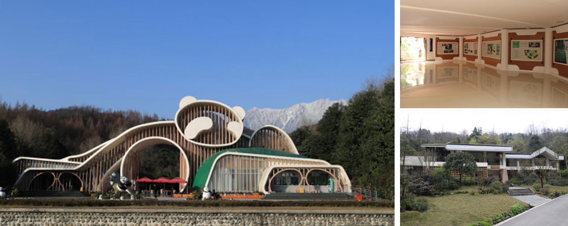

成都大熊猫繁育研究基地（以下简称基地）地位于中国四川省成都市成华区熊猫大道1375号，距市中心10公里，距成都双流国际机场30余公里，是世界著名的大熊猫迁地保护基地、科研繁育基地、公众教育基地和教育旅游基地。基地占地面积3.07平方公里。作为“大熊猫迁地保护生态示范工程”，以保护和繁育大熊猫、小熊猫等中国特有濒危野生动物而闻名于世。这里山峦含黛，碧水如镜，林涛阵阵，百鸟谐鸣，被誉为“国宝的自然天堂，我们的世外桃源”。
一、大熊猫繁育
基地以80年代抢救留下的6只病、饿大熊猫为基础，在未从野外捕获一只大熊猫的情况下，以技术创新为基础，截至2020年底大熊猫种群数量达215只，是全球最大的圈养大熊猫人工繁殖种群，且种群遗传质量、种群内个体健康状况和行为健康状况均良好。
二、大熊猫科研
近三十年来，通过系列创新性科研工作，基地攻克了圈养大熊猫人工饲养与管理、繁殖与育幼、疾病防控与种群遗传管理等关键技术难题，突破多项技术瓶颈，取得多项原创性科研成果，先后取得各级科研成果72项，在国际、国内知名期刊发表论文400余篇，获得国家专利30项。被国内外公认为开展圈养大熊猫保护科技实力最强、科技成果最多、应用推广效果最好的大熊猫迁地保护示范单位，并在2014年9月被授予“全国技术人才先进集体”的荣誉称号。
三、大熊猫保护教育
基地于2000年在全国野生动物保护系统率先开展公众保护教育工作，成立科普教育部。在中国野生动植物保护协会的指导下，引入先进的保护教育理念和教育方式，针对当今环境热点问题，从公众意识、情感、行为多层面在基地和深入到全国城市社区、大中小学、幼儿园和农村，开展了一系列丰富多彩的保护教育项目。获得了广大青少年和国内外志愿者、动物爱好者的高度赞誉和好评。目前和众多国家、机构开展合作，建立了广泛的联系和合作网络。先后获得了
“全球500佳”“全国青少年科技教育基地”“国家科普教育基地”“国家环保科普基地”、四川省和成都市的科普教育和生态保护示范基地、成都市未成年人社会主义核心价值观实践教育示范基地。
四、大熊猫旅游
基地坚持科研旅游并重的指导思想，形成“产、学、研、游”一体的可持续发展模式。基地以造园手法模拟大熊猫野外生态环境，大熊猫产房、熊猫饲养区、科研中心、熊猫医院分布有序，若干处豪华熊猫“别墅”散落于山林之中。不同年龄段的大熊猫在这里繁衍生息，长幼咸集，其乐融融。1998年，被世界旅游组织评估为与世界自然遗产九寨沟齐名的又一个传奇世界，2006年被评为国家AAAA旅游景区。2019年接待中外游客超900万人次。
五、成都大熊猫繁育研究基地都江堰繁育野放研究中心——“熊猫谷”
成都大熊猫繁育研究基地都江堰野放繁育研究中心—— “熊猫谷”，占地2004亩，坐落于都江堰市玉堂镇马家沟，毗邻都江堰千年水利工程和道家圣地青城山，距成都市50公里，离都江堰市区约3公里。从成灌高速、轻轨，赵公山至青城山环山大道均可到达，交通便利。这里竹木成荫，溪流潺潺，鸟语花香，自然气候条件得天独厚，拥有700余种动植物，是天然的大熊猫野化放归基地。
“熊猫谷”于2014年10月1日对外试开放，2015年4月20日正式对外开放。目前,
“熊猫谷”已拥有三栋大熊猫野化过渡训练兽舍和一个半野化训练场，常年有10余只大熊猫在这里开展野放适应性训练研究。

六、熊猫之都项目
为贯彻落实党的十九大和习总书记来川视察重要指示精神，做强成都大熊猫科研保护和文化核心载体，成都市委、市政府以大熊猫保护为核心，以建设全球保护典范、生态文明之窗、公园城市之星为主要目标，围绕科学研究、公众教育、国际交往、旅游休闲、文化创意、户外运动等主要功能，将大熊猫的生态、文化价值和成都美丽宜居公园城市建设有机结合，规划启动了“熊猫之都”项目，总规划面积约69km²，包括成都市北湖片区、都江堰片区和龙泉山片区3个区域。2019年成都市第一次规委会审议通过了“熊猫之都”总体策划及概念性规划方案。其中，北湖片区——熊猫基地改扩建项目作为核心公益性项目先行实施，首期工程已于2019年第三季度开工建设，力争成都大运会前建成开放。